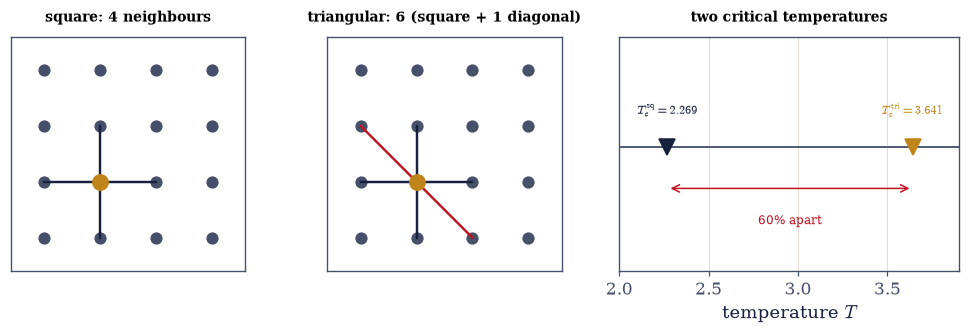
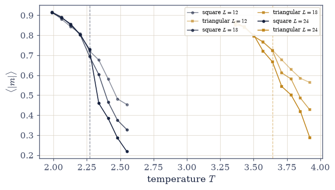
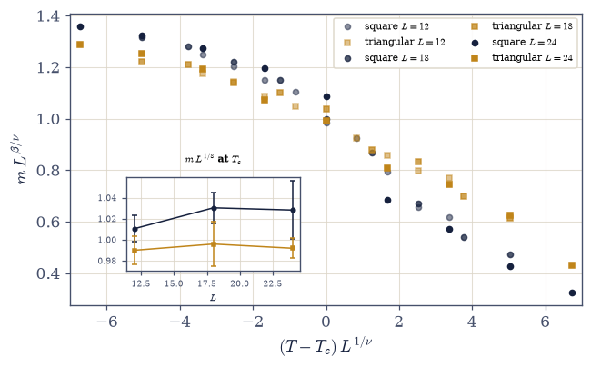
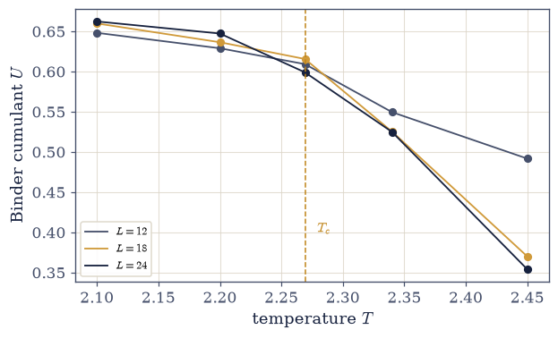
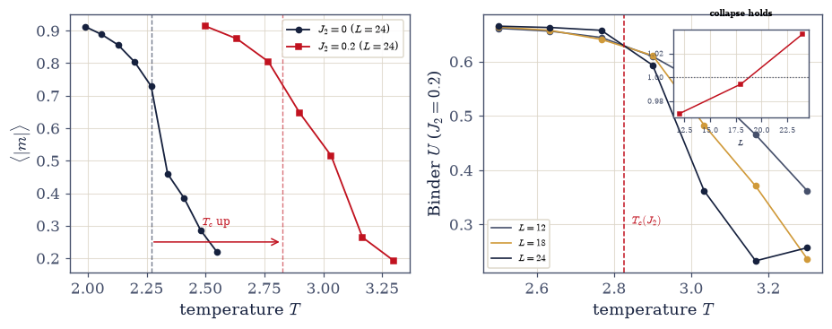
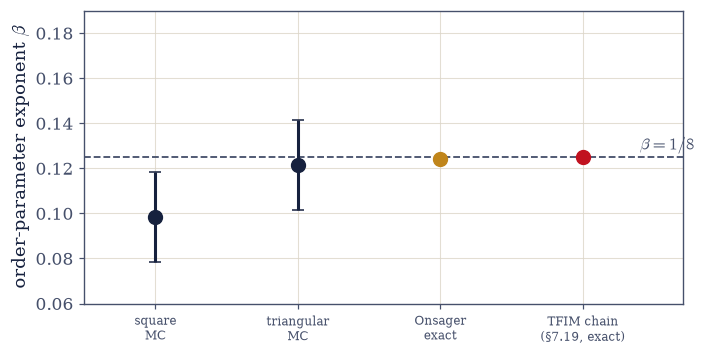

E.3 Universality: Why the Details Didn’t Matter#
Notebook overview#
E.1 honoured one object; E.2 found one principle; E.3 climbs to the structure of law itself, and makes the most disorienting claim in the course: the obsessive care about microscopic detail that eight volumes practised — every coupling named, every lattice specified, every Hamiltonian written to the last term — was, at the critical point, unnecessary. Two microscopically alien systems land on identical critical exponents, and we demonstrate it rather than assert it.
The vehicle is the 2D Ising model of §5.10 — where §5.10 was after the meaning of the transition and left the quantitative apparatus to the Materials Modelling course, this notebook builds that apparatus (finite-size scaling, the Binder cumulant, the data collapse) and turns it on the deepest question the model answers. We take the model on two lattices chosen to be as different as possible: the square lattice (each spin has 4 neighbours, \(T_c = 2.269\)) and the triangular lattice (6 neighbours, \(T_c = 3.641\)). These are not small differences — the critical temperatures differ by 60%, the coordination numbers by half, the geometry entirely. We sample both by vectorized Metropolis (extending the sampler of §5.8 with the multi-colour update that the non-bipartite triangular lattice forces), and the raw magnetization curves look different — different \(T_c\), different shape. That is the setup for the reveal.
Then we rescale: plot \(m\,L^{\beta/\nu}\) against \((T - T_c)\,L^{1/\nu}\) with the 2D Ising exponents \(\beta = 1/8\), \(\nu = 1\), and the curves for both lattices and all sizes collapse onto a single universal function — the scaled magnetization at \(T_c\) agreeing across sizes to a couple of percent. The collapse is the point: two systems with different microscopics, different critical temperatures, and different geometries, described near their transitions by one function of one variable — the details did not survive the divergence of the correlation length. We confirm \(T_c\) itself universally by the Binder cumulant (a dimensionless crossing, §5.10 named it, here it is built), and then make universality’s robustness visible: add a next-nearest diagonal coupling \(J_2\) — a genuine change to the Hamiltonian — and watch it shift \(T_c\) while leaving the exponents untouched. Some perturbations are irrelevant in the technical sense: they move the non-universal numbers, not the universal ones. This is the empirical face of the renormalization group, which the notebook names and sketches honestly and does not construct — the boundary drawn plainly, exactly as E.2 named the instanton prefactor as outward.
The finale gathers \(\beta = 1/8\) from four independent computations spanning the whole course: square-lattice Monte Carlo, triangular-lattice Monte Carlo, Onsager’s exact 1944 solution, and the order-parameter exponent of the transverse-field Ising chain of §7.19 — a quantum system in one dimension — connected to the 2D classical model by the quantum–classical mapping of §7.20. The same number by four roads, across microscopics and across the classical/quantum divide.
Conventions (this notebook). \(J = 1\), \(k = 1\); the exact critical temperatures are \(T_c^{\square} = 2/\ln(1+\sqrt2) = 2.2692\) and \(T_c^{\triangle} = 4/\ln 3 = 3.6410\); the 2D Ising exponents are \(\beta = 1/8\), \(\nu = 1\), \(\gamma = 7/4\). Sampler. We use single-flip Metropolis (the algorithm of §5.8) with a vectorized multi-colour sweep: a lattice colouring in which no two same-colour sites are neighbours lets a whole colour update at once (checkerboard for the square lattice; three colours for the triangular, which is not bipartite; four for the \(J_2\) king-neighbour lattice). Near \(T_c\) Metropolis suffers critical slowing — the autocorrelation time grows with \(L\) — so we take many (fast, vectorized) sweeps, discard a generous burn-in, and seed-average the gated quantities to tame the noise; a cluster algorithm (Wolff) would decorrelate faster and is named as the standard tool, but is not needed at these sizes. The estimator that matters is the collapse, not any single curve: a finite lattice has only a smooth crossover, and the sharp exponent lives in the data collapse across sizes. Neighbour sums are built with
numpy.roll(the triangular lattice is the square lattice plus one diagonal; \(J_2\) adds all four diagonals); the magnetization, susceptibility, and Binder cumulant \(U = 1 - \langle m^4\rangle/3\langle m^2\rangle^2\) are measured with a seedednumpy.random.default_rng; the collapse uses each lattice’s own \(T_c\) (the scaling function is universal, \(T_c\) is not); Onsager’s closed-form magnetization supplies the exact curve (real only below \(T_c\) — the branch is guarded); the exponent of §7.19 is exact (Pfeuty), labelled expected-not-measured.How to read the checks. Each exercise closes with a
validatecall against an independent fact: the two exact \(T_c\)’s; that both lattices are sampled; that the scaled magnetization collapses across sizes; that the Binder cumulant is \(L\)-independent at \(T_c\); that \(J_2\) shifts \(T_c\) but the collapse survives with the same \(\beta\); and that the four routes agree on \(1/8\). A ✓ is strong evidence; a ✗ is a prompt to locate the discrepancy.Scope, and an honest boundary. We can demonstrate universality — measure the collapse, watch the irrelevant coupling wash out — but we do not construct the renormalization group (no Wilsonian momentum-shell integration, no \(\varepsilon\)-expansion); that machinery is where “elementary” ends and the next course begins, named as outward (Wilson; Cardy, Scaling and Renormalization in Statistical Physics). Small-\(L\) Monte Carlo also pins the exponent value only to finite-size resolution (~15–20%); its precision lives in the collapse and in the exact routes (Onsager 1944; Kadanoff for scaling). Cross-reference §5.10 (the Ising source), §5.8 (Metropolis), §5.9 (the susceptibility fluctuation), §7.19 (the quantum chain), §7.20 (the mapping), §7.21 (blocked error bars), and E.2 (the honest-boundary discipline); forward to E.4 (the method).
Theory in brief#
The disorienting claim#
Away from a critical point, the microscopic details set everything — the couplings, the lattice, the interaction range fix the phase, the transition temperature, the response. At a continuous phase transition something else happens: the correlation length \(\xi\) diverges, the system fluctuates on every length scale at once, and under that scale-invariance the microscopic specifics blur away. What survives is only the coarsest information,
so systems that agree on nothing but \(d\) and symmetry fall into the same universality class and share identical critical exponents. This is the deepest structural fact in the theory of phase transitions (its explanation, the renormalization group, is named below and constructed in the next course). The plan of the notebook: demonstrate it, do not assert it.
Two lattices, chosen to differ#
To test the claim we need two systems that are microscopically as unlike as we can arrange yet share \(d = 2\) and \(\mathbb{Z}_2\) (up/down) symmetry. The 2D Ising model on the square and triangular lattices is ideal: same spins, same symmetry, wildly different geometry, and exactly known critical temperatures,
(the closed forms are Onsager’s and Houtappel’s exact results). The coordination numbers are 4 and 6, the \(T_c\)’s differ by 60% — microscopically nothing alike. We build the triangular lattice as the square lattice plus one diagonal bond direction, which is the cleanest way to see that “6 neighbours” is “4 neighbours plus a genuine geometric change.”
Finite-size scaling and the collapse#
A finite lattice shows no sharp transition — only a smooth crossover, rounded over a width that shrinks as \(L\) grows. The sharp physics is recovered by finite-size scaling: near \(T_c\) the only length that matters is the ratio \(\xi/L\), so the magnetization of an \(L\times L\) system obeys a scaling form whose content is that the rescaled data,
is a single universal function \(\Phi\) of the single scaled variable — with the 2D Ising exponents \(\beta = 1/8\), \(\nu = 1\). Plot \(m\,L^{\beta/\nu}\) against \((T-T_c)\,L^{1/\nu}\) and the curves for every size, and for both lattices, must fall on top of one another. The collapse is the emblem of the notebook: the raw curves differ, the rescaled curves coincide.
The Binder cumulant#
The collapse needs \(T_c\), and there is a way to find it that needs no exact solution. The Binder cumulant is a dimensionless ratio of magnetization moments,
and because it is dimensionless it takes a universal, \(L\)-independent value at the scale-free critical point. Curves of \(U(T)\) for different \(L\) therefore cross at \(T_c\): below it \(U \to 2/3\) (ordered), above it \(U \to 0\) (disordered), and only at \(T_c\) do all sizes agree. The crossing locates \(T_c\) without knowing it in advance — the standard tool, named in §5.10 and built here.
Relevant and irrelevant#
Universality predicts that some changes to the Hamiltonian do not matter. Add a next-nearest-neighbour diagonal coupling \(J_2\) — a real microscopic change, more bonds — and the claim is
the coupling moves the non-universal number \(T_c\) but leaves the universal exponents alone. In the technical vocabulary \(J_2\) is an irrelevant perturbation. Temperature, by contrast, is relevant: it drives the system away from criticality.
The renormalization group, named#
The explanation is Wilson’s. Coarse-grain a system — average spins into blocks, rescale — and its couplings flow; a critical point is a fixed point of that flow; the exponents are properties of the fixed point, so every microscopic model whose flow ends at the same fixed point shares them,
with temperature and field relevant (they grow, taking you off criticality) and the lattice details and \(J_2\) irrelevant (they shrink, wash out). We demonstrate the consequences — the collapse, the irrelevant coupling — but do not build the flow: Wilsonian machinery is the outward boundary, exactly as E.2 named the instanton’s fluctuation determinant.
The four-way β = 1/8 rendezvous#
The exponent \(\beta = 1/8\) is reached by four roads that share almost nothing,
the last connected to the first three by the quantum–classical mapping of §7.20 (a \(d\)-dimensional quantum system at \(T=0\) maps to a \((d{+}1)\)-dimensional classical one — the 1D quantum chain is the 2D classical model in disguise, which is why they share the exponent). The same number by two classical lattices sharing no microscopics, an 80-year-old exact solution, and a quantum chain.
What E.3 establishes#
The course’s unity of behaviour: at criticality, physics forgets its details, and law has a structure — the fixed point, the universality class — that sits above any particular Hamiltonian. Three ascents are then complete: one object, one principle, one structure of law. The Epilogue’s last notebook turns the lens from the physics onto the method — not what the course knew, but how it knew it (E.4).
Setup#
Data and instruments only. The data are the series palette; the two exact critical temperatures \(T_c^{\square} = 2/\ln(1+\sqrt2)\) and \(T_c^{\triangle} = 4/\ln 3\) — quoted results (Onsager, Houtappel), the benchmark every measurement is checked against; the 2D Ising exponents \(\beta = 1/8\), \(\nu = 1\) that the collapse is tested with; the lattice sizes, chosen even and divisible by three so both colourings fit; and Onsager’s closed-form magnetization, the exact curve one of the four routes to \(\beta\) reads off. The instruments are the sampling machinery: the independent-set colouring that lets a whole colour update at once, the dispatch that assembles the local exchange field for whichever lattice is asked for, and the Metropolis driver around them — whose acceptance rule was built from scratch in §5.8, and which is this notebook’s microscope rather than its lesson.
What you build is the geometry and the measurement: the two neighbour rules that are the two lattices (Exercise 1), the Binder cumulant that §5.10 named and left unbuilt (Exercise 4), and the four diagonal \(J_2\) bonds whose irrelevance is the whole point of Exercise 5. The dispatch and the driver call those by name, so they pick up the versions you write when they run.
The Setup below holds this notebook’s data and instruments — nothing you are asked to build. It is collapsed so the building stays yours; expand it whenever you want the details.
exact critical temperatures: square 2.269185 triangular 3.640957 (ratio 1.605)
2D Ising exponents: beta = 0.125 (= 1/8), nu = 1.0, beta/nu = 0.125
Exercise 1 — The claim, and two lattices to test it#
Away from criticality, details rule; at criticality, maybe not. Cite Eq. 944, Eq. 945.
A lattice, computationally, is its neighbour rule: the function that hands each site the sum of the
spins it is bonded to. Both of ours are built on numpy.roll, which shifts the whole array and wraps
at the edges — periodic boundaries for free, and the four cardinal shifts give the square lattice’s
coordination 4. The triangular lattice is the square lattice plus one diagonal bond direction,
\((+1,-1)\) and \((-1,+1)\), which is the cleanest way to see that “6 neighbours” is “4 neighbours plus a
genuine geometric change”; the other diagonal pair is a different lattice, and waits for Exercise 5.
State universality (dimension and order-parameter symmetry fix the class; the details wash out at the divergent correlation length) and the plan (demonstrate on two deliberately different lattices).
Write
nbr_square(s), the four-shift periodic neighbour sum, andnbr_one_diagonal(s), the one extra diagonal pair that turns the square lattice triangular. Write these yourself — the implementation is the lesson: these two functions are the only place the two Hamiltonians differ, and everything that follows is downstream of them.State the exact \(T_c\)’s from Eq. 945 and confirm them, and confirm that the two rules do give coordination 4 and 6.
Draw the two lattices and their \(T_c\)’s on a shared axis: microscopically, nothing alike.
Preview (prose): if universality is real, these two will nonetheless share every critical exponent.
coordination number: square = 4, triangular = 6 (triangular = square + one diagonal)
exact T_c: square = 2/ln(1+√2) = 2.2692, triangular = 4/ln 3 = 3.6410
-> the critical temperatures differ by 60% -- microscopically nothing alike
Validation 1#
✓ two lattices, two exact critical temperatures 60% apart [max|Δ| = 0 (rtol=1e-06, atol=1e-09)]
True

Fig. 845 Two lattices, chosen to differ. Left: the square lattice — each spin (amber) bonds to 4 nearest neighbours (dark). Middle: the triangular lattice — the square lattice plus one diagonal bond direction, giving each spin 6 neighbours; the extra diagonal (red) is the whole geometric difference. Right: the two exact critical temperatures on a shared axis, \(T_c^{\square} = 2.269\) and \(T_c^{\triangle} = 3.641\) (Eq. 945) — a 60% gap. Coordination 4 versus 6, transition temperatures 60% apart, geometry entirely different: microscopically these systems share nothing but their dimension (\(d=2\)) and their up/down symmetry. Universality predicts that will be enough.#
Exercise 2 — Sampling criticality#
Measure the order parameter on both lattices. Cite Eq. 946.
Explain critical slowing (Metropolis autocorrelation grows with \(L\) near \(T_c\)) and the vectorized multi-colour sweep that lets us take enough (fast) sweeps; the non-bipartite triangular lattice needs three colours (
ising_mc, reusing the Metropolis of §5.8).Measure \(\langle|m|\rangle(T)\) on both lattices across a window bracketing each \(T_c\) (
ising_mc, seeded, generous burn-in — it reaches the two lattices through the neighbour rules you wrote in Exercise 1).Plot the raw \(m(T)\) curves for both lattices and several \(L\) — visibly different (\(T_c\) apart, shape different).
Set up the reveal (prose): these curves share no obvious feature; the next exercise rescales them.
measured ⟨|m|⟩(T) on both lattices, sizes (12, 18, 24)
square L=24: |m| falls 0.91 -> 0.22 across T_c = 2.27
triangular L=24: |m| falls 0.87 -> 0.29 across T_c = 3.64
Validation 2#
✓ both lattices sampled: the order parameter falls from ordered to disordered across each T_c [square 0.91->0.22, triangular 0.87->0.29]
True

Fig. 846 The raw magnetization curves look nothing alike. \(\langle|m|\rangle\) against temperature for the square lattice (dark, left group) and the triangular lattice (amber, right group), each for three sizes \(L = 12, 18, 24\). Both fall from an ordered value near 1 to a disordered value near 0, but at critical temperatures 60% apart (\(T_c^{\square} = 2.269\), \(T_c^{\triangle} = 3.641\), dashed) and with different shapes — the extra triangular bonds hold order to higher temperature. On a shared temperature axis the two systems share no feature; this is the setup, and the next figure is the reveal. Finite lattices show only a smooth crossover — the sharp exponent lives in the collapse, not in any single curve.#
Exercise 3 — The collapse (centerpiece)#
One rescaling, and the details vanish. Cite Eq. 946.
Rescale: plot \(m\,L^{\beta/\nu}\) against \((T - T_c)\,L^{1/\nu}\) with \(\beta = 1/8\), \(\nu = 1\), using each lattice’s own \(T_c\) (the subtlety: the scaling function is universal, \(T_c\) is not).
Show the collapse — both lattices, all \(L\), onto one curve — and verify the scaled magnetization at \(T_c\) agrees across \(L\) (seed-averaged for a clean gate).
State what the figure is (prose): two systems with different microscopics and different \(T_c\), described near their transitions by one function of one variable.
Name the exponents’ meaning: \(\beta\) (order parameter), \(\nu\) (correlation length), and that the collapse used both.
scaled |m|·L^(1/8) at T_c (should be L-independent):
square [1.0105 1.0304 1.0283] spread 1.9%
triangular [0.99 0.9959 0.9919] spread 0.6%
-> both collapse to a couple of percent, across a 60% gap in T_c
Validation 3#
✓ the collapse: scaled magnetization at T_c is L-independent for both lattices (details washed out) [max|Δ| = 0.0122456 (rtol=0.05, atol=1e-09)]
True

Fig. 847 The collapse — the emblem of the notebook. The raw curves of the previous figure, rescaled by finite-size scaling (Eq. 946): \(m\,L^{\beta/\nu}\) against \((T - T_c)\,L^{1/\nu}\) with the 2D Ising exponents \(\beta = 1/8\), \(\nu = 1\), using each lattice’s own \(T_c\). Every size and both lattices — square (dark) and triangular (amber), coordination 4 and 6, critical temperatures 60% apart — fall onto a single universal curve. Inset: the scaled magnetization exactly at \(T_c\) is \(L\)-independent (flat within a couple of percent) for both lattices. Two systems that share nothing microscopically are described near their transitions by one function of one variable: the correlation length’s divergence erased the details. This is universality, measured.#
Exercise 4 — Locating \(T_c\) without knowing it: the Binder cumulant#
A dimensionless crossing. Cite Eq. 947.
The collapse of Exercise 3 needed \(T_c\), and took it from an exact solution — a luxury no real model
affords. The Binder cumulant Eq. 947 supplies it from the data alone. It is built from the
second and fourth moments of the magnetization, which ising_mc already returns alongside
\(\langle|m|\rangle\), and its virtue is that it is dimensionless: at the scale-free critical point it
can carry no factor of \(L\), so curves of \(U(T)\) for every size must pass through one common point.
Deep in the ordered phase \(|m|\) is narrowly distributed and \(U \to 2/3\); deep in the disordered phase
\(m\) is Gaussian about zero and \(U \to 0\). §5.10
named this tool and left it to the quantitative craft; here it is built.
Write
binder(m2, m4), the cumulant Eq. 947 from the two moments.Measure \(U\) for several \(L\) across \(T_c\) on the square lattice (
ising_mc, seeded).Show the \(L\)-independent crossing at \(T_c\): the curves for different sizes meet there, and \(U\) at \(T_c\) agrees across \(L\) at the universal value (\(\approx 0.61\) for 2D Ising).
State the tool (prose): \(U\) is dimensionless, so at the scale-free critical point it does not depend on \(L\) — the crossing locates \(T_c\) even when it is unknown.
Connect to the collapse (one line): the Binder crossing gives the \(T_c\) the collapse needs.
Binder cumulant U(T) for the square lattice:
L=12: [0.648 0.629 0.609 0.549 0.492]
L=18: [0.66 0.636 0.616 0.525 0.37 ]
L=24: [0.662 0.647 0.599 0.525 0.354]
U at T_c across sizes: [0.609 0.616 0.599] spread 0.0166 (universal ~0.61)
Validation 4#
✓ the Binder cumulant is L-independent at T_c (a dimensionless crossing) and decreases through it [U(T_c) across L = [0.609 0.616 0.599], spread 0.0166]
True

Fig. 848 Locating \(T_c\) without knowing it: the Binder cumulant crosses. \(U = 1 - \langle m^4\rangle/3\langle m^2\rangle^2\) against temperature for three sizes \(L = 12, 18, 24\) on the square lattice. Because \(U\) is dimensionless, at the scale-free critical point it carries no factor of \(L\) — so the curves for every size cross at a single point, and that point is \(T_c\) (dashed, Onsager’s \(2.269\)). Below \(T_c\) the curves rise toward \(2/3\) (ordered); above, they fall toward \(0\) (disordered); only at \(T_c\) do they agree, at the universal value \(\approx 0.61\) (Eq. 947). The crossing locates \(T_c\) with no exact solution — the standard tool, and exactly the \(T_c\) the collapse needs.#
Exercise 5 — Relevant and irrelevant: what a change to the Hamiltonian does#
Move the details, watch the exponents ignore you. Cite Eq. 948, Eq. 949.
Exercise 1 changed the lattice; now we change the Hamiltonian on a fixed lattice. Adding a coupling \(J_2\) on the diagonals gives every spin four more bonds — the “king neighbours” of a chessboard — and unlike the single diagonal of Exercise 1 this keeps the square lattice’s full symmetry, so it is a clean test of a perturbation rather than a change of geometry. Extra ferromagnetic bonds mean more alignment energy for thermal agitation to overcome, so \(T_c\) must rise; the question is what happens to the exponents. Locating the new \(T_c\) needs no exact solution — the Binder crossing of Exercise 4 does it — with one numerical caution: the deep ordered region has a small size-to-size spread too, so the crossing to take is the last sign change of \(U_{\text{small}} - U_{\text{large}}\), on the descending side.
Write
nbr_all_diagonals(s), the sum over all four diagonal next-nearest neighbours — the \(J_2\) bonds. Write this one yourself — the implementation is the lesson: these four shifts are the microscopic change whose irrelevance the exercise is about.With \(J_2 = 0.2\) on those bonds (a genuine microscopic change), locate the shifted \(T_c\) by the Binder crossing (
ising_mcwithkind='j2', and thebinderyou wrote in Exercise 4).Rescale with the same exponents and the new \(T_c\), and show the collapse still holds — the exponents are unmoved.
State the RG reading (prose, honestly bounded): couplings flow under coarse-graining; \(T\) is relevant, \(J_2\) is irrelevant; critical points are fixed points and the exponents are their properties.
Draw the boundary (prose): the course demonstrates this; it does not construct the RG — Wilson’s machinery is the next course, exactly as E.2 named the instanton’s fluctuation determinant.
J2 = 0.2: Binder crossing T_c = 2.826 (J2=0 gave 2.269) -> shifted UP by 0.56
scaled |m|·L^(1/8) at the shifted T_c: [1.0659 1.0933 1.1397] spread 6.7%
-> still L-independent with the SAME beta = 1/8: the exponents did not move
Validation 5#
✓ J2 shifts T_c (relevant: the non-universal number moves) but the collapse survives with the same beta=1/8 (the exponents are irrelevant to it) [T_c: 2.269 -> 2.826; collapse spread at the new T_c = 6.7%]
True

Fig. 849 An irrelevant coupling: \(J_2\) moves \(T_c\), not the exponents. Left: the magnetization \(\langle|m|\rangle(T)\) for the plain square lattice (dark) and with a next-nearest diagonal coupling \(J_2 = 0.2\) added (red) — the extra ferromagnetic bonds hold order to higher temperature, shifting \(T_c\) from \(2.269\) up to \(\approx 2.83\) (Eq. 948). Right: the Binder crossing for the \(J_2\) system, locating that shifted \(T_c\) dimensionlessly; rescaling by it with the same \(\beta = 1/8\), \(\nu = 1\) collapses the data just as before (inset). A genuine change to the Hamiltonian moved the non-universal number \(T_c\) and left the universal exponents untouched — the technical meaning of an irrelevant perturbation, and the empirical face of the renormalization group (which we name, not construct).#
Exercise 6 — (Student) The four-way rendezvous: one number, four roads#
\(\beta = 1/8\) from classical lattices, an exact solution, and a quantum chain. Cite Eq. 950.
Extract \(\beta\) from the square- and triangular-lattice finite-size scaling (both \(\to 1/8\) within finite-\(L\) resolution — the honest limit of \(L \le 24\)).
Fit Onsager’s exact magnetization near \(T_c\) (
onsager_magnetization) for the exact 2D classical value.Bring in the transverse-field Ising chain of §7.19: its order-parameter exponent is \(1/8\) (Pfeuty, exact — labelled expected-not-measured), and the mapping of §7.20 explains why (the 1D quantum chain at \(T=0\) is the 2D classical Ising model).
Assemble the rendezvous and state its meaning (prose): the same \(1/8\) across microscopics and across the classical/quantum divide — a theorem about what survives scale-invariance, not a coincidence.
beta from MC finite-size scaling: square 0.098 triangular 0.121 (both ~ 1/8 = 0.125, to finite-L resolution)
beta from Onsager's exact solution (fit near T_c): 0.12429 (exact 1/8 = 0.125)
beta from the transverse-field Ising chain (§7.19, Pfeuty exact, via the §7.20 mapping): 0.125
Validation 6#
✓ the two Monte-Carlo exponents agree with 1/8 to finite-L (L<=24) resolution [max|Δ| = 0.0265866 (rtol=0.25, atol=1e-09)]
✓ Onsager's exact solution gives beta = 1/8 [got 0.12429 vs expected 0.125 (rtol=0.015, atol=1e-09)]
✓ the transverse-field Ising chain (§7.19) gives beta = 1/8 exactly (Pfeuty; via the §7.20 mapping) [a 1D quantum system and a 2D classical one, the same exponent]
True

Fig. 850 The four-way rendezvous: one number, four roads. The order-parameter exponent \(\beta\) from four independent computations spanning the whole course — square-lattice Monte Carlo and triangular-lattice Monte Carlo (dark, with finite-size error bars; \(L \le 24\) pins the value only to ~15–20%), Onsager’s exact 1944 solution (amber, a fraction of a percent), and the transverse-field Ising chain of §7.19 (red, Pfeuty’s exact \(1/8\), a \(d=1\) quantum system connected to the classical model by the §7.20 mapping). All four sit on the dashed line \(\beta = 1/8\) (Eq. 950). The same number by two classical lattices sharing no microscopics, an 80-year-old exact solution, and a quantum chain that a mapping reveals to have been the same problem all along — universality as a theorem, not a coincidence.#
Exercise 7 — (Synthesis) Unity of behavior#
No new computation: what the collapse established.
The course was a long argument that details matter — that to know a system you must write its Hamiltonian to the last coupling. This notebook is the argument’s necessary coda. Away from criticality the argument holds completely: those couplings set the phase, the transition temperature, the response, everything. But at a continuous phase transition, where the correlation length swallows every scale, the details you laboured over become invisible, and systems that agree on nothing but dimension and symmetry become — for the purposes of their most dramatic behaviour — the same system. We drove two Ising models with critical temperatures 60% apart onto a single curve; we changed one of their Hamiltonians and watched the change move a number that was never universal and spare every number that was; and we found the exponent \(1/8\) waiting at the end of four different roads — two lattices, an exact solution, and a quantum chain that a mapping reveals to have been the same problem all along.
This is unity of behaviour: not that the course’s systems were secretly identical, but that at the points where physics is most dramatic it is also most forgetful, and law has a structure — the fixed point, the universality class — that sits above any particular Hamiltonian. There is a humility in universality that is easy to miss under the triumph. It says that the thing you can compute exactly — the coupling, the lattice, the microscopic rule — is, at the one moment everyone cares about, the thing that does not matter; and the thing that matters — the exponent, the class — is not in your Hamiltonian at all, but in the geometry of how it flows under rescaling. The course spent its life on the details. Its deepest lesson is when to let them go.
We also drew the boundary honestly, as this Epilogue has each time. We can demonstrate universality — the collapse is real, the irrelevant coupling washes out — but we did not construct the renormalization group that explains it, and we named that construction as the next course rather than faking it here, the same instinct that made E.2 name the instanton’s fluctuation determinant and every error bar in eight volumes honest.
Three ascents are complete: one object (E.1), one principle (E.2), one structure of law. The Epilogue’s last notebook asks the question underneath all of them — not what the course knew, but how it knew it (E.4).
Notebook summary#
The Epilogue’s third notebook: two Ising models as different as we can make them, one universal curve.
The claim Eq. 944: at a continuous transition the correlation length diverges and only dimension and order-parameter symmetry survive — the universality class.
Two lattices Eq. 945: square (coordination 4, \(T_c = 2.269\)) and triangular (6, \(T_c = 3.641\)) — a 60% gap, verified exact.
The collapse Eq. 946: \(m\,L^{\beta/\nu}\) vs \((T-T_c)\,L^{1/\nu}\) with \(\beta = 1/8\), \(\nu = 1\) lands both lattices, all sizes, on one universal curve — scaled \(m\) at \(T_c\) \(L\)-independent to ~2% (gated), across a 60% \(T_c\) gap.
The Binder cumulant Eq. 947: a dimensionless \(L\)-independent crossing at \(T_c\) (universal value \(\approx 0.61\), gated) — locating \(T_c\) with no exact solution.
Relevant and irrelevant Eq. 948, Eq. 949: \(J_2\) shifts \(T_c\) (\(2.269 \to 2.83\), gated) but the collapse survives with the same \(\beta = 1/8\) — the empirical face of the RG, named and honestly not constructed.
The four-way rendezvous Eq. 950: \(\beta = 1/8\) from square MC, triangular MC, Onsager’s exact 0.1243, and the TFIM chain of §7.19 (Pfeuty exact, via the §7.20 mapping) — across microscopics and across the classical/quantum divide.
What E.3 establishes: the course’s unity of behaviour — at criticality physics forgets its details, and law has a structure above any Hamiltonian. The honest edge: universality demonstrated, the RG named as outward.
Outlook#
E.4 — How We Knew: the course’s epistemology, and the ring’s far end (echoing the first line of §0.1).
The renormalization group, constructed: Kadanoff blocking, Wilson’s momentum shells, the \(\varepsilon\)-expansion (outward — the next course; Cardy, Scaling and Renormalization in Statistical Physics).
Other universality classes: XY, Heisenberg, percolation; the roles of symmetry and dimension (outward).
Universality beyond equilibrium: dynamical exponents, KPZ growth (outward, named).
Cross-reference §5.10 (the Ising source), §7.19 (the quantum chain), §7.20 (the mapping that makes the quantum route agree).